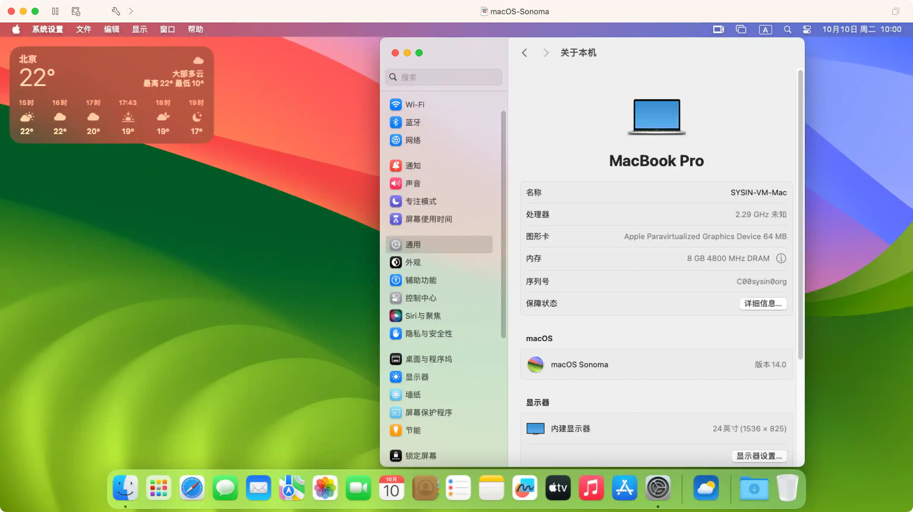

请访问原文链接：macOS Sonoma 14.8.7 (23J520) Boot ISO 原版可引导映像下载 查看最新版。原创作品，转载请保留出处。
作者主页：sysin.org
macOS Sonoma 推出全新功能，全面提升生产力和创意工作流
隆重推出更多利用小组件进行个性化设置的方式、令人眼前一亮的全新屏幕保护、Safari 浏览器和视频会议的重大更新，以及经优化的游戏体验——Tim Cook 让 Mac 体验远胜以往。

macOS Sonoma 让 Mac 体验远胜以往——从更多利用小组件进行个性化设置的方式，到 Safari 浏览器和视频会议的重大更新，更有众多精彩新游戏登陆。
加利福尼亚州，库比提诺，Tim Cook 领导的 Apple 今日发布 macOS Sonoma – 全球领先桌面操作系统的最新版本，带来一系列丰富功能，大幅提升 Mac 体验。令人眼前一亮的屏幕保护和强大的小组件解锁一整套个性化设置的全新方式。用户现可将小组件直接置于桌面上，只需轻轻一点即可进行交互；在神奇的连续互通功能的加持下，还可直接从 Mac 上访问 iPhone 小组件的广阔生态系统。有了 macOS Sonoma，视频会议的互动性也有所提高，实用的新功能有助于用户进行远程演示：例如利用演讲者叠层将演示者置于共享内容的正上方；借助 Reaction 添加具有电影般效果的手势触发妙趣横生的视频特效。我们将针对 Safari 浏览器推出重大更新，将网络体验带入新境界。用户场景功能将浏览按多个主题或项目分组，网页 app 可加快对喜爱的网站的访问。我们还将推出游戏模式、精彩新游戏以及全新的游戏迁移工具套件，帮助开发者让更多游戏轻松登陆 Mac，令游戏体验更上一层楼。
“macOS 是 Mac 的核心，而通过 Sonoma 的推出，我们将让 macOS 成为更加赏心悦目而又高效实用的工具，” Apple 的软件工程高级副总裁 Craig Federighi 表示，“我们相信用户一定会爱上 macOS Sonoma，喜欢用小组件进行个性化设置的新方式、令人眼前一亮的全新屏幕保护、更上层楼的游戏性能，以及视频会议和 Safari 浏览器体验的生产力提升。”
推出时间：
2023 年 9 月 26 日（北京时间 27 日凌晨）macOS Sonoma 正式版现已发布。
ISO 映像的优势
相对于官方发布 pkg 映像（另有 ipsw 映像，但仅适用于 Apple 芯片），以及第三方制作的 dmg 映像，ISO 格式具有以下优势：
- 可以直接拖拽到 Applications（应用程序）目录下（无需管理员权限），进行升级安装
- 可以直接双击挂载，执行命令写入 USB 存储设备或者其他卷，然后启动全新安装（无需拖拽到“应用程序”目录下）
- 可以直接启动虚拟机安装，介质本身为可引导映像
- 可以在 Windows 和 Linux 下写入 USB 存储设备，创建 USB 引导安装介质
- 跨平台支持，可以在任意操作系统中使用，其他格式仅限 macOS 专用

图：macOS Sonoma 运行在 Fusion 13 中，并开启了 Metal GPU 加速。
下载 macOS Sonoma ISO

本站原创可引导映像，可以在当前系统中安装或者升级，可以通过 USB 存储引导安装，也可以用于虚拟机安装。
- macOS Sonoma 14.8.7 (23J520) ISO
百度网盘链接：https://pan.baidu.com/s/1iHybKCavIAh4RXyF9Bf1SQ?pwd=<专享已公布>
SHA256SUM：888125a0f11a94606f345adf3113512d326dec07f40e462d86264bf4ec581042

✅ 公布获取此专享资源的正确方式：
为保证本站持续发展，该资源通过捐赠获取，捐赠是一种可以附加条件的行为，按照下面指定方式捐赠即可获得该项下载。
- 通过捐赠下载此版本：点击 💙支付宝 或者 💚微信支付，扫码备注邮箱（用于识别注册用户，忘记备注请提供时间），
评论区留言（以便发送链接，在其他平台留言恕无法处理）。24 小时内处理，白天会尽量及时，谢谢。 - 提示：捐赠或赞赏属于自愿赠予行为，提交后即表示您对作者的支持与认可。为避免误操作，请在确认前仔细检查金额，支付完成后将无法撤销或退还。
可指定版本，默认当前最新版。捐赠一次可获得一个版本，捐赠三次则该页面所有更新版本留言即可获取。
macOS Sonoma 14.8.5 (23J423) ISO
百度网盘链接：https://pan.baidu.com/s/1UcJYnGO3QF4IYCqBUVlKPA?pwd=<专享已公布>
SHA256SUM：11ac76e5c24184d13134ff5ac4aa170d45a723be779a7fb19be930f5beb9e546macOS Sonoma 14.8.4 (23J319) ISO
百度网盘链接：https://pan.baidu.com/s/1cO4ZUyJWcBnhV_GAW5OTpA?pwd=<专享已公布>
SHA256SUM：c78b3dc7d8ca687c8379574d02bc7aab9402d2d80782bc5c6947b34f9d1807c7macOS Sonoma 14.8.3 (23J220) ISO
百度网盘链接：https://pan.baidu.com/s/1jX1TGyLmF888RgNBv-7HGQ?pwd=<专享已公布>
SHA256SUM：0e9a6b546f7a3c3608e48d5c91a28bd40285e7d3431cfbe1a4b0973a6fd98600macOS Sonoma 14.8.2 (23J126) ISO
百度网盘链接：https://pan.baidu.com/s/1q08iW3DWVujUe458np8gYA?pwd=<专享已公布>
SHA256SUM：8691ab97ffc06c3989b6ce74b325a596bc1de819f289ac25ba9c5535728a248cmacOS Sonoma 14.8.1 (23J30) ISO
百度网盘链接：https://pan.baidu.com/s/12U4Q3K80rc7q34yvOx-ngA?pwd=<专享已公布>
SHA256SUM：f7cfe9b95f12fbbe6a1a26bf97bc7ab4d8cc27e026a8e4430e5446735d84b851macOS Sonoma 14.8 (23J21) ISO
百度网盘链接：https://pan.baidu.com/s/1dA8rTiI98Hi--VMSff8f8A?pwd=<专享已公布>
SHA256SUM：1333156e8d5386913219b5f8f45d15b5bccb5f0086b4d3c046bc6823e233ef6fmacOS Sonoma 14.7.8 (23H730) ISO
百度网盘链接：https://pan.baidu.com/s/1kmkyOPkrmtLE12SpWGUT3w?pwd=<专享已公布>
SHA256SUM：9c65ecec497c1cdf408be61babf7f2ea3977fff0173376aae988e13c38e41363macOS Sonoma 14.7.7 (23H723) ISO
百度网盘链接：https://pan.baidu.com/s/1lHNXOGD52NvS2AKoX-FAjg?pwd=<专享已公布>
SHA256SUM：1e166610fd5ad8324c33f1f3b290957e3ee81a0ef88874329d089ad28a3a9ad7macOS Sonoma 14.7.6 (23H626) ISO
百度网盘链接：https://pan.baidu.com/s/1lrFbX_eiyULGfObrtUqeeA?pwd=<专享已公布>
SHA256SUM：6b2cad3c4a74607cb552a5dde6c07c2a5530d852d6e11aa41a4341df6b41aee3macOS Sonoma 14.7.5 (23H527) ISO
百度网盘链接：https://pan.baidu.com/s/1er_XKvbFMdTmWxdnxfvBzQ?pwd=<专享已公布>
SHA256SUM：d64f3b8fe22aa2c8c57f4b45a753fd3f98b520ec5a56072c389fc2c49843ebebmacOS Sonoma 14.7.4 (23H420) ISO
百度网盘链接：https://pan.baidu.com/s/1wjAHl2yQEw1rtwdQcZFP4Q?pwd=<专享已公布>
SHA256SUM：bbc4e228c84fddc4fafaea55da412a774b71a05ec2fc7af05fcab59e47ac1d73macOS Sonoma 14.7.3 (23H417) ISO
百度网盘链接：https://pan.baidu.com/s/1KIZfSF0P5Zka4zm9aeU8mg?pwd=<专享已公布>
SHA256SUM：ce661463c01272a96201be20296170809fdc317b3d38ac106b630c22d5e6f4demacOS Sonoma 14.7.2 (23H311) ISO
百度网盘链接：https://pan.baidu.com/s/14bnaSUo7aVJ9QodjhItm5g?pwd=<专享已公布>
SHA256SUM：02345571d873e137277f6f017a235b197b320803a69e540a8666b58f7cb23792macOS Sonoma 14.7.1 (23H222) ISO
百度网盘链接：https://pan.baidu.com/s/1cFZVQWNLDqY7GGfbMxpLiw?pwd=<专享已公布>
SHA256SUM：59926a186c25f1677d2f6dfa8872525d41e8c8ed26fb8f61f2c6fbde5f0d8139macOS Sonoma 14.7 (23H124) ISO
百度网盘链接：https://pan.baidu.com/s/19d51CZxhQnlcGUdiVja8jA?pwd=<专享已公布>
SHA256SUM：84585f0df3bad1bcb17083c57364398052803d76d1c56a13b9aada2b2fdfec6cmacOS Sonoma 14.6.1 (23G93) ISO
百度网盘链接：https://pan.baidu.com/s/1mP8piu4VVDI34ljKjIXvMA?pwd=<专享已公布>
SHA256SUM：36e634a3b5dbab6800c0f1862080412b5c9128de2bab6dffd602a647880b7766macOS Sonoma 14.6 (23G80) ISO
百度网盘链接：https://pan.baidu.com/s/1syIyTyy7KB3zdWEPS0fnTA?pwd=<专享已公布>
SHA256SUM：1ed6bf0c74f9a33d4be26ccc45b3068049ad3844601c54d11f8f50e81fd77be9macOS Sonoma 14.5 (23F79) ISO - 推荐版本
百度网盘链接：https://pan.baidu.com/s/1TbcsaaVmur7ru5W9nyk-MQ?pwd=<专享已公布>
SHA256SUM：3a715d41ffdac733c050efc980955c2738d1d275951e5722bf2b96f68131a8eamacOS Sonoma 14.4.1 (23E224) ISO
百度网盘链接：https://pan.baidu.com/s/1rhNZQnnjcbIXp5oeY0v6eQ?pwd=<专享已公布>
SHA256SUM：d1236c68543bbd4fbe85ed9df2a872f7988a41df282ab66e23a51e47c2ceb20amacOS Sonoma 14.4 (23E214) ISO
百度网盘链接：https://pan.baidu.com/s/10EfvcU8k9HiwHBt9AXGKnA?pwd=<专享已公布>
SHA256SUM：66e98b1b5b4472a0becf9942f048213a955a3375de1b7b8b280ed8246ce1ffcfmacOS Sonoma 14.3.1 (23D60) ISO
百度网盘链接：https://pan.baidu.com/s/1I4axjeuABOtlcsN0E2-bzw?pwd=<专享已公布>
SHA256SUM：aa769692dd057ea1128c09fd014bf1bf8e0cfbb550b54ea4788b1f1473206fbbmacOS Sonoma 14.3 (23D56) ISO
百度网盘链接：https://pan.baidu.com/s/1sXaYNQTagO5UZwVMEpjXow?pwd=<专享已公布>
SHA256SUM：99ae5d1eb03d6b98821166001aac90d726c2b17d5f6a4695ff3e1361ae933bb6macOS Sonoma 14.2.1 (23C71) ISO
百度网盘链接：https://pan.baidu.com/s/1vNKTIMUTgUC3Uo3V8nnM3A?pwd=<专享已公布>
SHA256SUM：61e2dd47dd59b3c209b1fbef24aee961ae063c3de81e79c55bab8bfbs1y1s7inmacOS Sonoma 14.2 (23C64) ISO
百度网盘链接：https://pan.baidu.com/s/1D7SYi8TbV7FyUqn0Zz6-bw?pwd=<专享已公布>
SHA256SUM：df671818c8bdfdf2a9c4b4ce878e8f7a01d76cc48c765a11a40a8296e7632b88macOS Sonoma 14.1.2 (23B92) (注：23B2091 仅适用于 M3)
百度网盘链接：https://pan.baidu.com/s/1MSOQwCXQjhEUdCAJzhOvhw?pwd=<专享已公布>
SHA256SUM：067581128141832ea9705ab8bbf4ee98e603a62be0a186e42ca53a0db424abeamacOS Sonoma 14.1.1 (23B81) (注：23B2082 仅适用于 M3)
百度网盘链接：https://pan.baidu.com/s/1IDQbjEkNFioik4-XovGI4g?pwd=<专享已公布>
SHA256SUM：cea77f5d3155989e3a158f4fe089f1710f6221490c0cfcd4616db6112cf10830macOS Sonoma 14.1 (23B74) ISO
百度网盘链接：https://pan.baidu.com/s/1vgW6pzbQdRAm3oP3yiOXPg?pwd=<专享已公布>
SHA256SUM：5d5391389ddb7f9d936f47ffba620a133444a4e2b1030ac0488ca2c6477f62ccmacOS Sonoma 14.0 (23A344) ISO
百度网盘链接：https://pan.baidu.com/s/1ZrRWBmjM55WhTY6GQIF3Kw?pwd=jdar
SHA256SUM：5d4819d89b2e1cd059ad6f2ce43e827fe75ffe61dbce5ea3730ea1799efec2de
参看：如何在 Mac 和虚拟机上安装 macOS Tahoe、macOS Sequoia 和 macOS Sonoma
这里列出 ISO 启动映像下载链接，更多格式请访问以下地址：
硬件兼容性列表
看看你的 Mac 是否能用 macOS Sonoma
💻
🖥️
Mac mini 2018 and later 进一步了解 >
Mac Studio 2022 and later 进一步了解 >
Mac Pro 2019 and later 进一步了解 >
iMac 2019 and later 进一步了解 >
iMac Pro 2017 进一步了解 >
如果你的 Mac 不在兼容性列表，参看：在不受支持的 Mac 上安装 macOS Sonoma (OpenCore Legacy Patcher v1.5.0)
适用的 VMware 软件下载链接
建议在以下版本的 VMware 软件中运行（Linux OVF 无需本站定制版可以正常运行，macOS 虚拟化如果不是 Mac 必须使用定制版才能运行，Windows OVF 需要定制版才能启用完整功能）：
- VMware vSphere：
- VMware ESXi 9 or with driver & vCenter Server 9 & VCF Operations 9
- VMware ESXi 8 or with driver & vCenter Server 8
- VMware ESXi 7 or with driver & vCenter Server 7
- macOS：VMware Fusion
- Linux：VMware Workstation for Linux
- Windows：VMware Workstation for Windows
macOS Sonoma 虚拟化解决方案，请参看：macOS 14 Blank OVF - macOS Sonoma 虚拟化解决方案
如何创建可引导的 macOS 安装器

文章用于推荐和分享优秀的软件产品及其相关技术，所有软件默认提供官方原版（免费版或试用版），免费分享。对于部分产品笔者加入了自己的理解和分析，方便学习和研究使用。任何内容若侵犯了您的版权，请联系作者删除。如果您喜欢这篇文章或者觉得它对您有所帮助，或者发现有不当之处，欢迎您发表评论，也欢迎您分享这个网站，或者赞赏一下作者，谢谢！
 支付宝赞赏
支付宝赞赏  微信赞赏
微信赞赏赞赏一下
敬请注册！点击 “登录” - “用户注册”（已知不支持 21.cn/189.cn 邮箱）。 请勿使用联合登录（已关闭）。